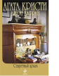

Книга-сенсация, наделавшая много шума в кругах поклонников детектива! Автор устроил расследование в духе самой Агаты Кристи - изучив "творческую кухню" великой писательницы по записям, сделанным в блокнотах и на полях рукописей. Мы узнаем, что в "Десяти негритятах" (и других романах) на роль убийцы пробовались совсем не те персонажи и как трансформировался сюжет; что расследование "Смерти на Ниле" изначально должна была вести мисс Марпл и почему добрая старушка была заменена на Пуаро; что Дама Агата нарушила шутливый запрет Детективного клуба на использование в текстах редких ядов и почему она это сделала; что писательница обожала детские английские считалки про негритят, поросят, мышат, хикори-дикори, дроздов и почему не всем им нашлось достойное применение в книгах... В конце книги - бонус, взбудораживший мировые СМИ, - два никогда не публиковавшихся рассказа об Эркюле Пуаро. В п